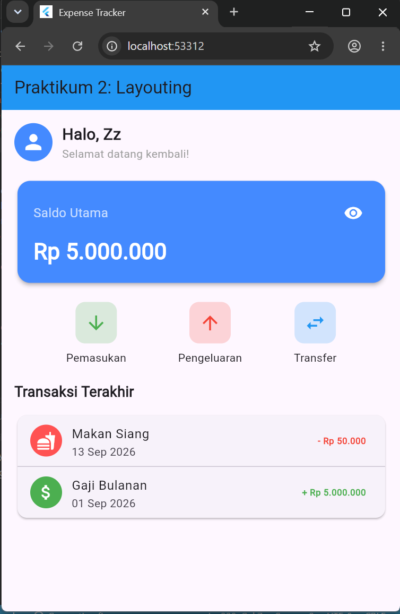

📖 BAB III: Pembahasan Praktikum 2
Pada praktikum kedua, dilakukan penambahan elemen antarmuka baru dan penerapan teknik layouting tingkat lanjut agar aplikasi lebih kompleks dan fungsional.
🛠️ Lingkungan Pengembangan (Tools)
📌 3.1 Penerapan SingleChildScrollView
Keseluruhan body pada DashboardScreen dibungkus menggunakan SingleChildScrollView. Hal ini dilakukan untuk mencegah error overflow pada layar (terutama pada perangkat berlayar kecil) ketika elemen konten yang dirender, seperti daftar transaksi, melebihi tinggi layar.
.png)
.png)
📌 3.2 Implementasi Layouting Tombol Aksi (ActionButtonsWidget)
.png)
Menu aksi ditambahkan dengan memanfaatkan widget Row dengan properti mainAxisAlignment: MainAxisAlignment.spaceEvenly. Properti ini memastikan jarak antar tombol (Pemasukan, Pengeluaran, dan Transfer) terbagi sama rata secara proporsional dari sisi kiri hingga kanan layar. Untuk efisiensi kode, pembuatan masing-masing tombol dibungkus ke dalam helper function _buildActionButton.
📌 3.3 Implementasi Daftar Transaksi (RecentTransactionsWidget)
Untuk menampilkan riwayat transaksi, dibuat sebuah model data Transaksi. Model ini menyertakan logic getter yang secara otomatis mengubah gaya tampilan teks (Tugas 1 Praktikum):
- Jika nominal >= 0, maka dikategorikan sebagai "Pemasukan", ditandai dengan ikon plus (+) dan teks nominal berwarna hijau (
Colors.green). - Jika nominal < 0, maka dikategorikan sebagai "Pengeluaran", ditandai dengan ikon minus (-) dan teks nominal berwarna merah (
Colors.red).
.png)
.png)
📌 3.4 Hasil Praktikum 2
Daftar transaksi ini di-render menggunakan widget Column dan perulangan (loop) yang menghasilkan komponen ListTile dan garis pemisah (Divider). Sesuai dengan instruksi Tugas 2, data riwayat transaksi ditambahkan menjadi total 4 entri data, yakni "Makan Siang", "Gaji Bulanan", "Belanja Bulanan", dan "Bonus".

📌 3.5 Hasil Percobaan Praktikum 2

Antarmuka berhasil diperbarui dengan tambahan deretan tombol aksi di bawah kartu saldo utama. Di bawahnya, terdapat Card berisi daftar "Transaksi Terakhir" di mana teks harga secara dinamis berubah warna menjadi merah atau hijau sesuai dengan nilai nominal pemasukan maupun pengeluaran pada backend dummy data.
✅ BAB IV: Kesimpulan Akhir
Widget Row dan Column memegang peranan krusial untuk menentukan tata letak dasar secara horizontal dan vertikal. Selain itu, pemanfaatan class Model (seperti class Transaksi) terbukti mempermudah implementasi logika kondisional secara otomatis (seperti format pewarnaan nominal harga) sehingga kode UI tetap bersih dan modular.